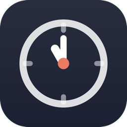

Watcher
Time tracking for your Mac
Get help
Found a bug or have a question? Open an issue. Say which macOS and Watcher versions you're on (Watcher → About Watcher).
Issues are public. Never paste your Toggl API token or anything private into one.
Common questions
What's free, and what does Pro add?
Timers, the menu bar, the last 30 days of history and Toggl Sync Now are free, with as many
timers running at once as you like. Pro adds automatic Toggl sync, starting and stopping
timers from the command line and the /watcher skill, history older than 30 days,
and CSV and JSON export.
How does the trial work?
Start the free 14-day trial from Watcher to try every Pro feature. When it ends, Pro features lock until you buy Watcher Pro once. Your timers and history are kept either way.
I bought Pro on another Mac. How do I get it here?
Sign in to the Mac App Store with the same Apple Account, then choose Restore Purchases in Watcher.
How do I connect Toggl?
Copy your API token from your Toggl profile and paste it in Watcher's settings under Toggl, and click Connect. You can then pick a default project.
How do I use Watcher from Terminal or a coding agent?
Open Watcher's settings, go to Command Line, and install the watcher command
and the skill for Claude Code or Codex. Run watcher help to see the commands.
Where is my data?
On your Mac only. See the privacy policy for what Toggl sync sends.